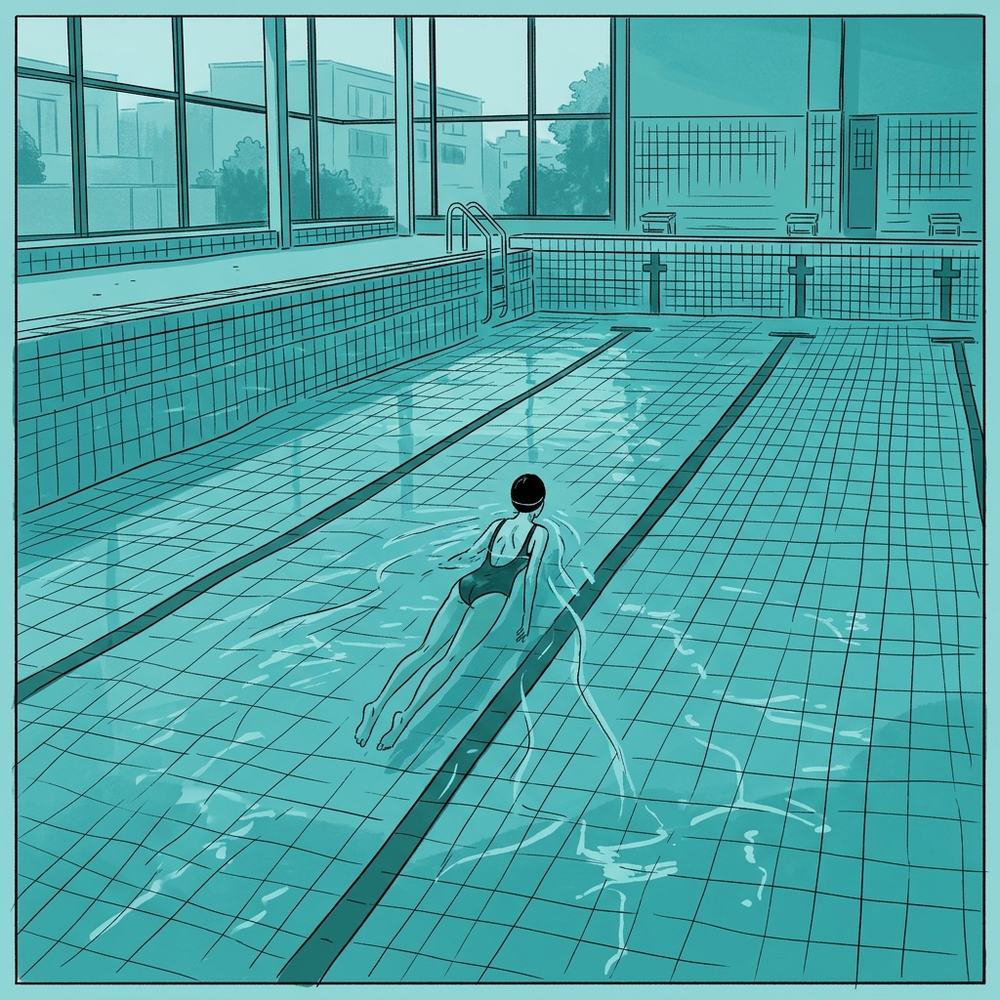
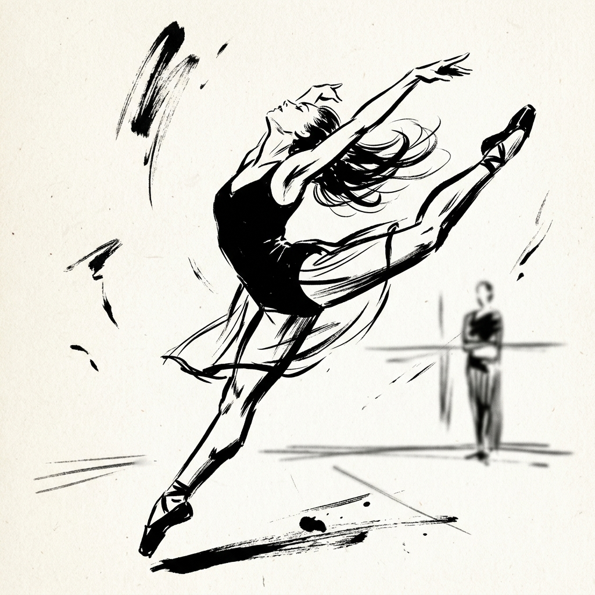

01. 정적인 역동성: 수영장의 미학
비베스의 걸작 [염소 수영장]에서 보여지는 푸른색 톤과 수면의 일렁임은 단순히 장소를 묘사하는 것을 넘어, 등장인물 간의 미세한 감정적 긴장을 시각화합니다. 굵은 선과 절제된 디테일은 독자로 하여금 인물의 표정보다 '태도'와 '공기'에 집중하게 만듭니다.

비베스의 걸작 [염소 수영장]에서 보여지는 푸른색 톤과 수면의 일렁임은 단순히 장소를 묘사하는 것을 넘어, 등장인물 간의 미세한 감정적 긴장을 시각화합니다. 굵은 선과 절제된 디테일은 독자로 하여금 인물의 표정보다 '태도'와 '공기'에 집중하게 만듭니다.

[폴리나]와 [라스트 맨]에서 극대화되는 랏슈 트레(거칠고 해방된 선) 기법은 데생의 완벽함보다 움직임의 에너지를 포착하는 데 주력합니다. 무용수의 발끝이 지면에 닿는 찰나의 순간을 날선 획으로 표현함으로써, 육체가 가진 물리적인 무게감을 예술적 자유로 변환합니다.

비베스는 배경을 과감히 생략하거나 인물의 눈을 점 하나로 표현함에도 불구하고, 관객은 그 안에서 비극과 희극을 동시에 읽어냅니다. 이는 정보의 결핍이 아니라, 의미의 응축입니다. 그의 화풍은 현대 그래픽 노블이 도달할 수 있는 가장 우아한 경제성을 보여줍니다.